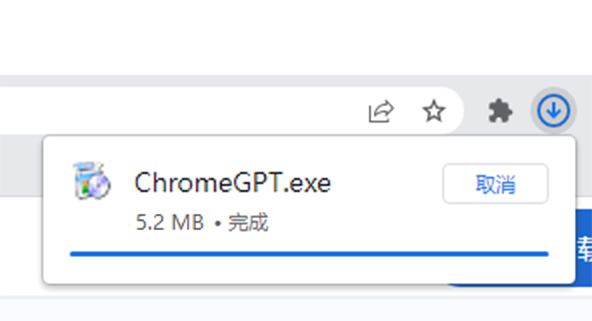
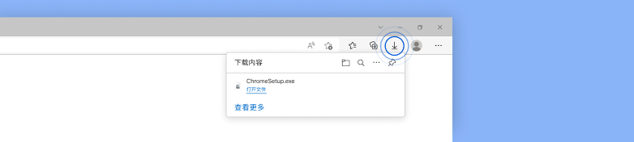
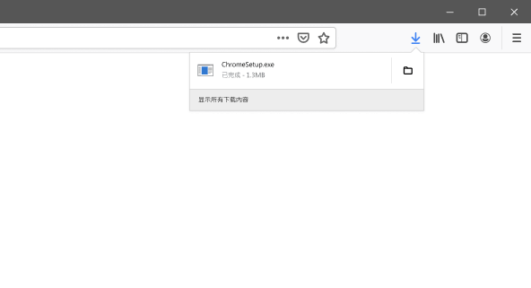
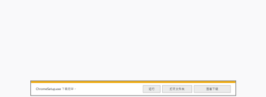
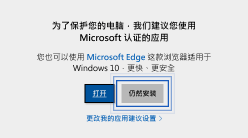
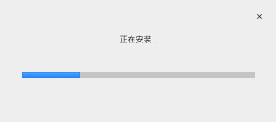

感谢下载！
还差几步即可大功告成
您的下载任务将会自动开始。如果无法正常下载，手动下载 GPT Chrome
第 1 步
打开
从此浏览器“右上角”或“左下角”或“弹出框”的下载列表中打开安装文件。

第 1 步
打开
从此浏览器“右上角”或“左下角”或“弹出框”的下载列表中打开安装文件。

第 1 步
打开
从此浏览器“右上角”或“左下角”或“弹出框”的下载列表中打开安装文件。

第 1 步
运行
点击对话框中的“运行”，安装程序应该会随即启动。

第 2 步
允许
如果系统提示，请在系统对话框中依次点击“仍然安装”和“是”。

第 3 步
安装
请等待“GPT浏览器”安装完成，GPT浏览器会在安装完成后自动打开。
